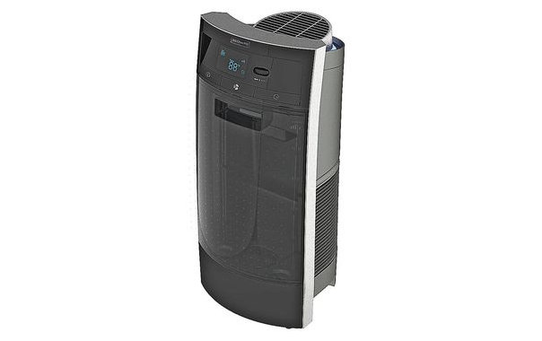

Humidity And Nasal Congestion
A few years ago I visited my physician here in Chilliwack with a complaint of nasal congestion that simply wouldn't go away. It's something that I've mostly always dealt with, but only started to complain about it when I realized that other people didn't seem to have the same problem. My doctor noticed that the inside of the nose was inflamed, so he prescribed nasal corticosteroids to help me breathe better.
Since that time I've visited many different countries around the world. In some of them my nose was just as congested as it was back home. But in many of them my nose completely cleared up, allowing me to breathe easier.
When I got back home again to the Vancouver area a few weeks ago, my nasal congestion immediately returned. A friend of mine suggested that it might be somehow related to the low humidity during the cold months back home (which is often when I'm back at home). I pulled my old humidity meter out of a box, and sure enough the humidity in my apartment was around 29%, which is really dry.

I immediately went out and purchased a humidifier and started the process of raising the humidity in my apartment. After a few days and a few tanks of water, the humidity in my apartment is hovering around the 40% mark, which my humidity meter says is in the "comfort" zone.
Sure enough, my nose has almost completely opened again, and I can almost breathe normally. While your mileage may vary (some people probably have legitimate allergies) in my case raising the humidity by approximately 10% in my apartment seems to have helped quite a bit. If you think your apartment might be dry like mine, you can test it out with a humidity meter. If it's low, pick up a humidifier and let it run for a few days. Hopefully it will help you out, like it helped me out.